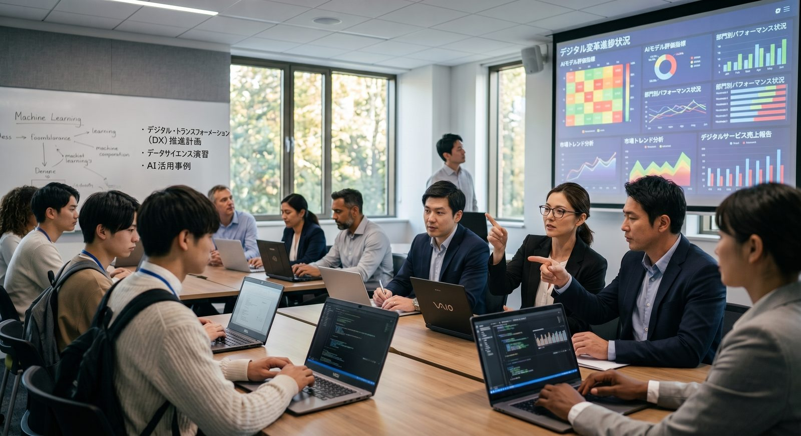
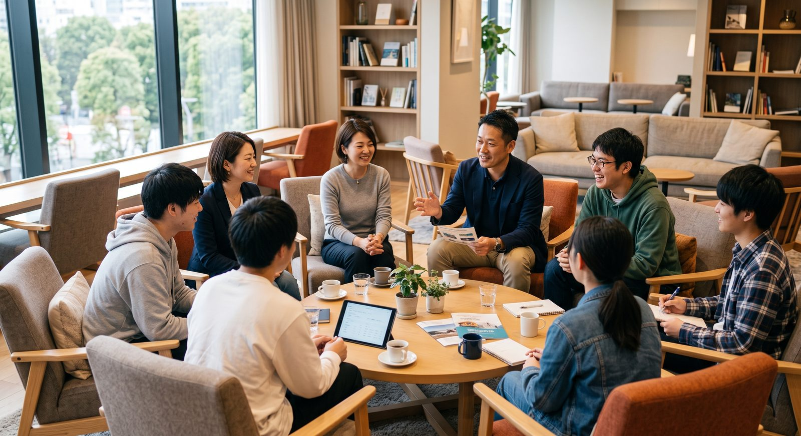
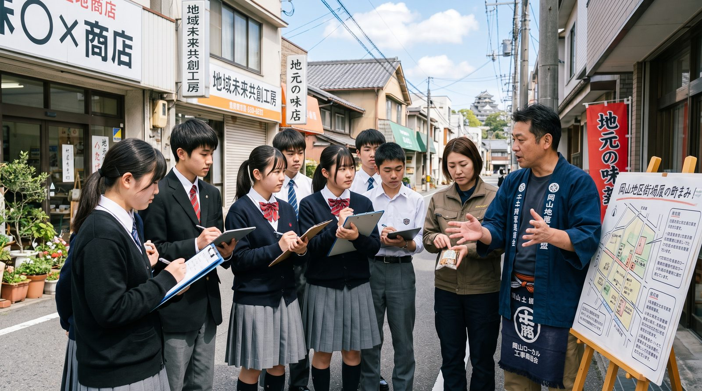
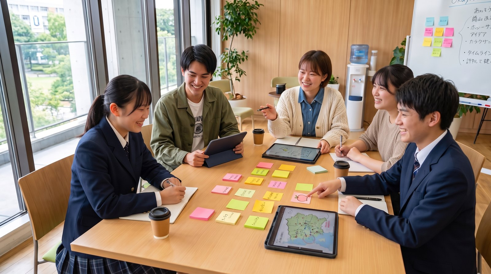

取組と実践
学ぶ・働く・暮らすの魅力を高める ― 三つの観点で、取組を束ねる。
参画大学がこれまで個別に積み上げてきた活動を、県全体の仕組みに束ねます。ここでは個別の事業名や数字ではなく、OLIVEが何を大切にし、どんな考え方で動くのかを「コンセプト」としてまとめました。
三つの観点
幼稚園から大学院まで、在学中に、そして戻ってくるまで。
大学を残すだけでは、流出の時点が18歳から22歳にずれるだけ。学ぶ・働く・暮らすの魅力を一体で高め、学生が在学中にそれを思う存分体感できるようにします。

学ぶ高校での探究授業（イメージ）学ぶ魅力
学ぶ魅力があれば、そこで学ぶ ― 幼稚園から大学院まで、答えのないテーマに問いを立てる学びへ
- マナビの改革大学の教員と学生が幼稚園から高校までの学びの現場に入り、探究を「一緒につくる」
- 起業家教育遊びから入り、手を動かし、「作りたい」を起点に挑戦する体験を重ねる
- 大学間連携PBL企業・自治体の実課題を現地現物で。専門の異なる大学・学部が同じ現場で学び合う

働く地域企業と学生の交流（イメージ）働く魅力
働く魅力があれば、そこで働く ― 在学中に地域の仕事を体感し、データで需給ギャップを埋める
- 需給ギャップの可視化不足する業種・スキルをデータで確かめ、感覚ではなく「共通の物差し」で議論する
- 強みで分担する育成とリスキリング強みを持つ大学が育て、大学間で連携して提供する。社会人の学び直しも地域全体で担う
- 在学中に地域の仕事と出会う採用目的ではない出会いと体験を重ね、地域で働くイメージを在学中に育てる

暮らす地域に滞在するPBL（イメージ）暮らす魅力
暮らす魅力があれば、還ってくる ― 在学中に地域で暮らす経験が、戻る理由になる
- 地域に滞在するPBL暮らしを思う存分体感する経験が、通い続ける関係と戻る理由になる
- 戻る道と関係人口県外に出た若者とのつながりを保ち、UIJターンや関わり続ける道をひらく
- ユースボード若い世代が2040年の未来像を描き、「当事者」として提言する
学ぶ マナビの改革
高校の探究を現場で支え、幼稚園から大学への入口をつくる。
「教える」ではなく「一緒につくる」。学びの接続は、幼稚園から始まります。
教員と学生が高校の現場に入り、探究を一緒に設計する
- 大学の教員が、高校にある機材・教材を活かした実習を高校と共同で設計・運営する
- 年の近い大学生メンターが生徒の隣に座り、問いを立て、試し、まとめる過程に伴走する

高校と大学の共同設計（イメージ）大学の研究室と学びのフィールドを、高校の探究の場として開く
- 高校のカリキュラムと大学の資源をつなぎ、探究・STEAMのプログラムを高校と共同で設計する
- 地域の企業・自治体の課題を探究テーマとして提供し、高校生も学びのフィールドに入れるようにする
大学生が講師となり、「面白い」が学びの入口になる体験を届ける
- ロボットやものづくり、お金の仕組みなど、手で触れて驚く体験授業を幼稚園・小中学校へ届ける
- 地域の企業やスタートアップと組み、学びと社会のつながりを早い段階から示す
学ぶ 起業家教育
ゲーム感覚で起業を体験し、ワクワクを燃料に手を動かす。
育った学生が次の世代に伴走する。この循環が、ユースボードの入口になります。
ゲームのように会社づくりを体験し、小中高生が「商売」の全体像をつかむ
- 会社設立から市場調査・資金調達・決算までを疑似体験し、最後は大人の前で発表する
- 大学生が研修を経てファシリテーターになり、年の近い先輩として小中高生のチームに伴走する
学生が自由にプロトタイピングできる「秘密基地」を常設する
- 作りたいものを自ら設計・製作し、失敗しながら磨く。評価より先に手を動かす
- ここから生まれたプロジェクトが、起業や研究、地域での実装へつながっていく
専門の異なる学生がチームを組み、学び合いながら磨く
- 1校では揃わない専門性を、大学・高専をまたいだチームで補い合う
- 一校の取組を県全体に広げる、大学間連携の型をつくる
学ぶ働く暮らす 大学間連携PBL
答えのない問いに、専門の異なる大学・学部が同じ現場で学び合う。
企業・自治体の実課題を、各大学の強みで分担する。1大学ではできない学際的・超学際的な学びを、県全体の仕組みにします。
企業の現場に入り、算定・設計・表現を専門ごとに分担する
- 経済・工学・デザインなど専門の異なる学部が、同じ課題を別の角度から担う
- 成果は現場に戻し、実際に使われる形で検証する
町の困りごとを、技術と空間と住民の視点で解く
- 技術を持ち込むだけでなく、住民と一緒に「使い道」を探す
- お試しの短期PBLから始め、継続的な関わりへ育てる
滞在しながら学び、暮らしを思う存分体感する
- 畑で汗をかき、住民と語る時間が、通い続ける関係と戻る理由になる
- 専門の異なる学生が互いに講師役になり、超学際的に学ぶ
受入の型
地域と大学の双方にコーディネーターを置き、現場の負担を減らす。
受け入れる地域にも、送り出す大学にも窓口を一本化し、コーディネーター同士で調整する。この型を、すべての学びのフィールドに横展開します。
県内の地域連携プロジェクトを、一枚の地図に
市町村を選んで、分野を選んで。答えのない実課題に揉まれる「知的修羅場」の体験と、地域に役立った「貢献実感」が得られる場をつくる。参画大学のフィールドが重なれば、地域全体が学びのフィールドになる。OLIVEはこの地図を参画大学で共有し、県内の学生が同じ地図から現場を選べるようにします。
学ぶ働く データ基盤・リスキリング
人材需給ギャップをデータで確認し、各大学の強みで埋める。
不足する業種・スキルを特定し、強みを持つ大学が育てる。大学間で連携して、学生の育成とリスキリング・アップスキリングを地域全体へ。
人材需給ギャップダッシュボード
部会・企業・大学が同じ画面を見て議論する「共通の物差し」
公表統計と各大学の進路データ、企業の声を一枚の画面に重ね、業種別・地域別の人材需給と将来のスキルギャップを見える化する。感覚ではなくデータで、大学の役割分担やカリキュラムの方向を議論します。
※ 本画像は活動のイメージです。
データ → 育成 それぞれの大学の強みを、地域全体に活かす
県内で人材が足りない業種を、データで確かめる
業種ごとに足りないスキルを分解し、ギャップを言語化する
看護は看護系、ものづくりは高専・理系、経営は商科系。学生の育成とリスキリングを分担する
連携開設科目・単位互換で県内の学生に開き、社会人講座は階層別に束ねる
働く暮らす 県内定着・還流
在学中に地域の仕事と出会い、出て行っても戻る道をひらく。
就職活動の直前ではなく、在学中の早い段階から地域の企業・仕事・人と出会う機会をつくる。県外に出た若者とも、つながりを切らさない。
採用の場ではなく、人と仕事を知る場を日常に
- 座談会・現場見学・学生による企業取材など、採用目的ではない接点を重ねる
- 「どんな会社があるか知らない」をなくすことから始める
働きながら学ぶ経験を、対価のある形で
- 短期の有償インターンで、地域企業の実際の仕事を体感する
- 企業にとっても、学生の視点が現場に入る機会になる
岡山出身者のコミュニティをつくり、戻る道と関わり続ける道を保つ
- 進学・就職で県外にいる若者と、情報・人・機会でつながり続ける
- UIJターンだけでなく、副業・兼業・プロジェクト参加など多様な関わり方をひらく
ユースボード
学生を「支援の対象」ではなく「未来共創の当事者」に。
参画大学・高専・高校の学生で構成する常設の学生参画組織です。
2040年に社会の中核となる世代として、学ぶ・働く・暮らすの未来像を描き、産学官金言のトップへリバースメンタリング
PBLや連携開設科目など、OLIVEの各活動を企画段階から見て、学生目線で評価する
岡山で学び・働き・暮らす魅力を自分の言葉で県外へ。県外の岡山出身者コミュニティとつなぎ、UIJターンを促す
学生メンターとして高校・小中学校へ。年の近い先輩が伴走し、修了者が次のメンターになる
提言は部会を経て運営委員会、おかやま円卓会議等へ。アドバイザリーボード（県内外の有識者・年1〜2回）のレビューと併せて事業計画に反映します。